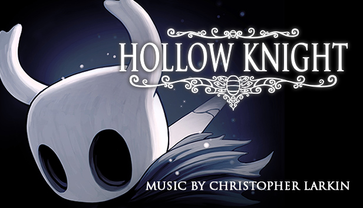

Hollow Knight
À propos
Hollow Knight est un jeu d'action-aventure de type Metroidvania développé par Team Cherry. Le joueur y incarne un petit chevalier silencieux explorant Hallownest, un vaste royaume souterrain déchu, rempli de créatures étranges, de mystères et d'anciens secrets. Le jeu se distingue par ses cartes labyrinthiques, son level design exigeant, son gameplay précis, ainsi que par une direction artistique dessinée à la main et une bande-son immersive composée par Christopher Larkin.Au fil de l'aventure, le joueur affronte des boss redoutables, obtient de nouvelles capacités, et découvre progressivement la tragédie qui a frappé Hallownest. Avec son univers sombre et poétique, sa difficulté maîtrisée et son exploration riche, Hollow Knight a reçu un accueil critique très positif et est devenu un classique du genre Metroidvania.
Captures d'écran


Détails
Team Cherry est un studio indépendant de jeux vidéo australien. Il a été co-fondé en 2014 par Ari Gibson et William Pellen, qui ont travaillé ensemble auparavant sur des jams de jeux. Leur premier titre, Hollow Knight, a été financé via Kickstarter.
Dans la peau de Hornet, princesse protectrice d'Hallownest, partez à l'aventure dans un royaume inédit, hanté par la soie et les chants. Capturée et emmenée en terre inconnue, Hornet devra affronter des ennemis et résoudre des mystères tout en entreprenant un périlleux pèlerinage jusqu'au sommet du royaume.
Voir plus